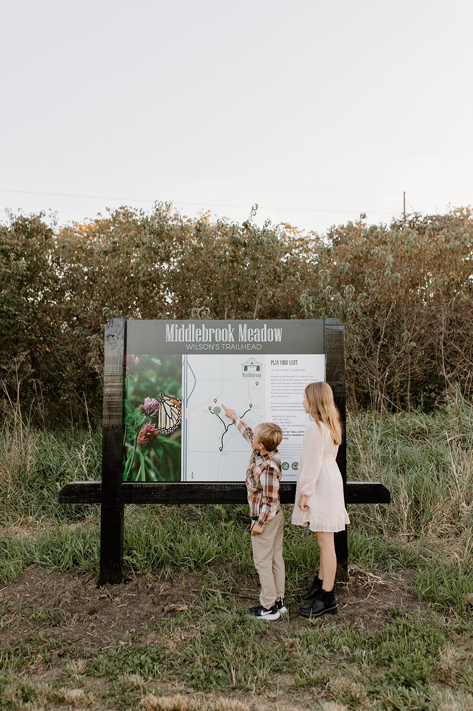
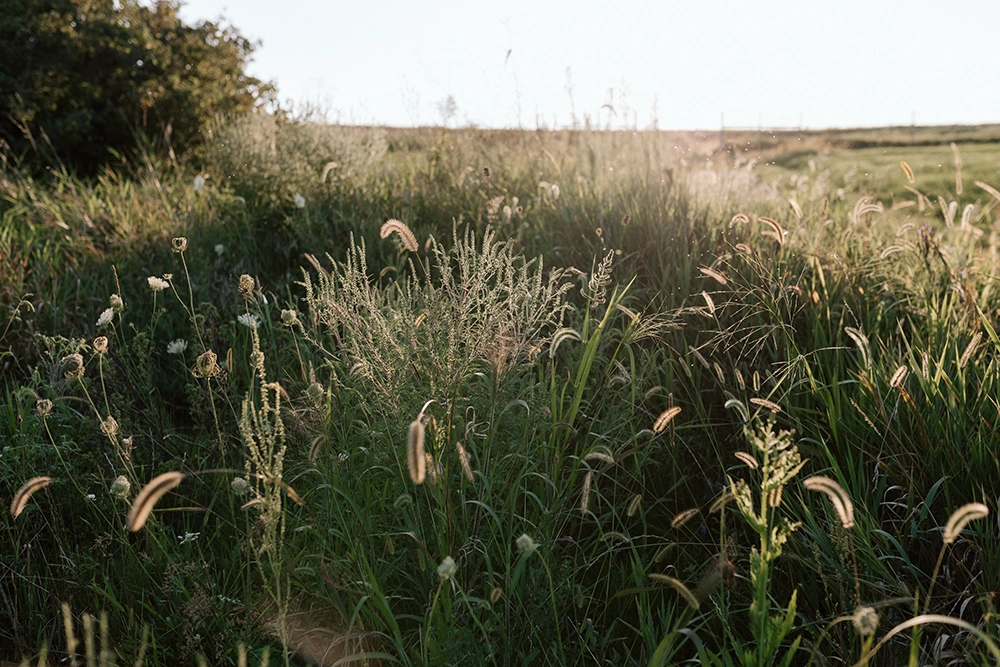
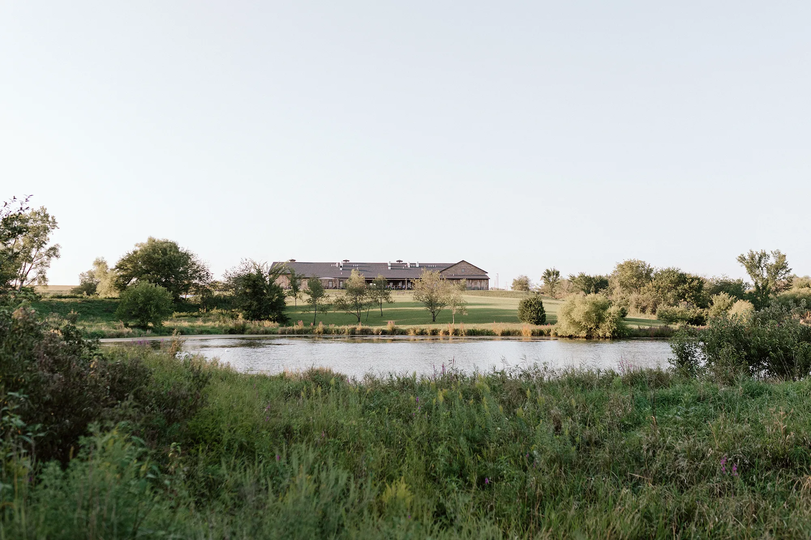

Demo of the Meadow intro section. Compare with the current Meadow page. Highlighted text needs real facts.
Rolling hills, native grasses, a creek, and a pond, with mowed trails running through all of it. The Meadow is open sunup to sundown, and the walk below starts at Wilson’s Trailhead.
Beside Wilson’s Orchard, off 15th Avenue south of Cumming Avenue. The trail map is posted at the sign.

Wilson’s Orchard keeps [which animals] on the hillside near the trailhead as part of their polyculture farm. Say hello from the trail.
[Two or three species by name], all native to Iowa. Green in spring, gold by late summer.


Stop here and watch for [what people actually see: herons, frogs, ducks?].
All three trails meet here. Walk back the way you came, or keep going to the Great Western Trailhead or the Coolidge Trailhead.
1.5 miles of trail in all
View the Meadow trail map